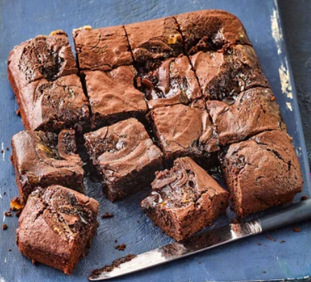

Mommy milkies

Ingredients
- 150g butter
- 75g light soft brown sugar
- 150g plain chocolate, broken into pieces
- 1 tbsp golden syrup
- 3 eggs
- 125g golden caster sugar
- 1 tsp vanilla extract
- 150g plain flour
- ½ tsp baking powder
- 3 tbsp cocoa powder, plus more to dust
- 4-6 tbsp dulce de leche, caramel or chocolate hazelnut spread
Steps
- Heat the oven to 180C/160C fan/gas 4. Line a 20cm square cake tin with baking parchment. Melt together the butter, brown sugar, chocolate and golden syrup gently on a low heat until it is smooth. Remove the pan from the heat.
- Whisk together the eggs and caster sugar in a large bowl until light and fluffy – this will take a few minutes and is worth doing properly. Add the vanilla extract, then sift over the flour, baking powder and cocoa powder and add the chocolate mixture. Fold everything together quickly and scoop half of the mixture into the tin. Dot over scoops of caramel or chocolate hazelnut spread and then scoop the rest of the brownie mixture over the top. Add more scoops of caramel or chocolate spread, if you like, and bake for 30 mins. The top of the mixture should now be set and slightly cracked looking, but the mixture underneath will still have a slight wobble.
- Remove from the oven and allow to cool completely before cutting into squares. Dust the tops with cocoa or icing sugar, if you like, or if serving as a dessert drizzle with more caramel. Will keep for 3 days in an airtight container.